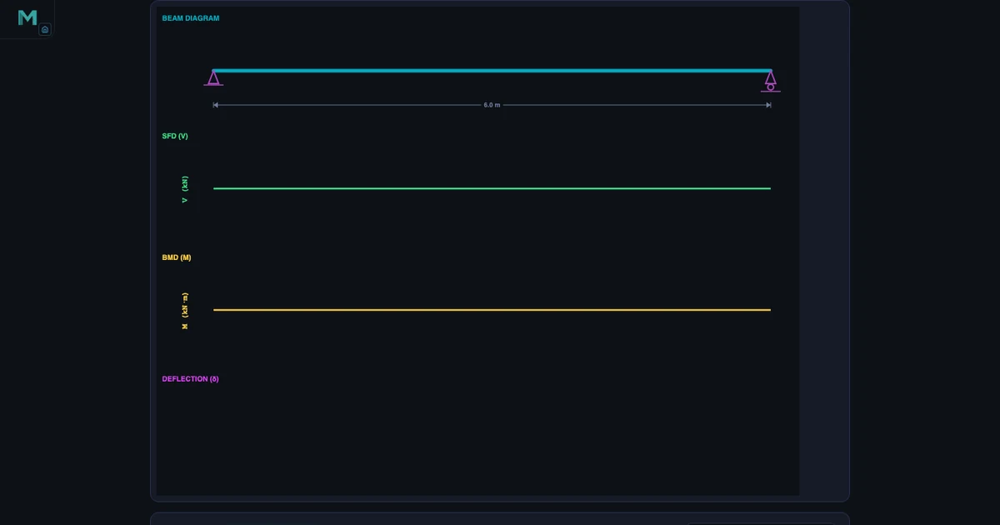
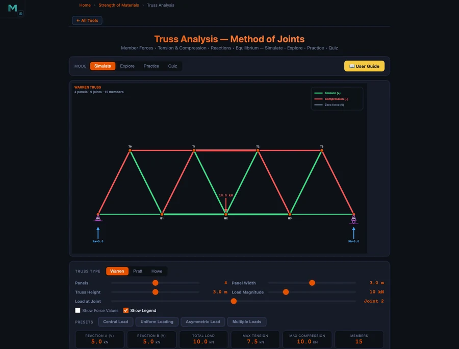

Learn Structural Engineering With Simulators — Free Student Guide

- Free structural engineering simulators let students master beam analysis, truss analysis, stress transformation, column buckling, and pressure vessels in the browser — no FEA software licence required.
- Each tool computes and draws results live: a beam under a UDL w over span L gives M_max = wL²/8, a truss is solved by method of joints (ΣFx = 0, ΣFy = 0), and column buckling uses Euler's load Pcr = π²EI/Le².
- The recommended path is a 12-week self-study plan — two weeks per topic — where every simulator result is verified against a hand calculation.
Ask any structural engineering student which topic first felt genuinely difficult, and the answer is almost always the same: shear force and bending moment diagrams. Not because the mathematics is hard — the equilibrium equations are straightforward — but because the picture takes time to click. Where exactly does the moment peak? Why does a uniform load produce a parabolic BMD when a point load produces a triangle? What is a point of contraflexure, and why does it matter for reinforced concrete design?
These questions have answers that are much easier to see than to read. A free structural engineering simulator that draws the SFD and BMD live, as you move the load along the beam, answers them in about ninety seconds. This guide walks through five such simulators, shows the exact numbers they produce, and finishes with a 12-week self-study plan for anyone who wants to cover the structural curriculum without access to expensive FEA software.
Structural Engineering — Why “Does It Hold?” Is Never a Simple Question
Structural engineering is the discipline that turns “will this structure stand?” into a quantitative answer. It sits at the intersection of statics, mechanics of materials, and design codes, and it has a reputation for being unforgiving — bridges and buildings do not get second chances. That reputation is deserved, but it can make the subject feel intimidating to students who are still building their intuition.
The difficulty is that structural behaviour is invisible. A steel beam does not look different when it is carrying 80 % of its design load versus 10 %. The bending stress at the extreme fibre, the shear flow at the neutral axis, the lateral-torsional buckling tendency of an unbraced compression flange — none of these are apparent from the outside. Structural engineers have always used diagrams and calculations to make the invisible visible. The simulators on NHIT VisualLab do exactly that, with the added advantage that you can change any parameter and watch everything update in real time.
The five tools covered here address the core structural topics that appear in every undergraduate programme: beam analysis, truss analysis, stress transformation, column stability, and pressure vessel design. Together they cover the ground that students most often find abstract — and most need to understand before they move into design.
Tool 1: Beam Bending Simulator — Shear Force and Bending Moment Diagrams
The Beam Bending Simulator handles simply-supported beams and cantilevers with any combination of point loads, uniformly distributed loads (UDL), and applied moments. Reactions are computed from the full equilibrium conditions:
\[\sum F_y = 0 \qquad \sum M = 0\]
For a simply-supported beam of span L = 6 m with a single central point load P, both reactions are P/2 by symmetry, and the maximum bending moment occurs at midspan:
\[M_{\max} = \frac{PL}{4}\]
Switch to a UDL of w = 6 kN/m on a span L = 8 m, and the formula changes to:
\[M_{\max} = \frac{wL^2}{8} = \frac{6 \times 8^2}{8} = 48 \text{ kN·m}\]
The simulator draws this in the BMD panel immediately. What students often miss from the static formula alone is the shape of the diagram: the SFD is linear under a UDL (slope equals the distributed load intensity), and the BMD is parabolic. At the point where the SFD crosses zero, the BMD reaches its peak — a direct consequence of the fundamental relationship dM/dx = V.
For a cantilever with a point load P at the free end, the maximum moment occurs at the fixed support:
\[M_{\max} = PL\]
The simulator draws the SFD as a rectangle (constant shear throughout) and the BMD as a straight line rising from zero at the free end to PL at the wall — the opposite orientation to what many students expect after studying simply-supported beams. Seeing both configurations side by side, with the same load and span, makes the distinction permanent.
Points of contraflexure — locations where the bending moment changes sign — are marked automatically for multi-span and overhanging cases. These points are critical in reinforced concrete design because tensile reinforcement must switch faces at contraflexure, and students who understand them graphically make far fewer detailing errors later. For a deeper treatment of SFD and BMD construction rules, the Shear Force & Bending Moment Diagram Guide covers the sign conventions and step-by-step procedure.
Tool 2: Truss Analysis Simulator — Forces in Every Member
The Truss Analysis Simulator solves planar trusses using the method of joints. The procedure starts with global equilibrium to find support reactions — the same ΣFy = 0 and ΣM = 0 used in beam analysis — and then works joint by joint through the structure.
At each joint, two equilibrium equations apply:
\[\sum F_x = 0 \qquad \sum F_y = 0\]
Because every truss member carries only axial force (no shear, no bending moment), the sign of that force tells the full structural story: positive means tension, negative means compression. The simulator colour-codes members accordingly — blue for tension, red for compression — so students can read the force distribution at a glance and connect it to the physical intuition that the top chord of a simply-loaded Warren truss is in compression while the bottom chord is in tension.

The simulator supports Warren, Pratt, and Howe truss configurations, as well as custom geometries. Swapping between truss types immediately shows students how diagonal orientation determines which members carry tension and which carry compression — a distinction that matters for material selection, since steel handles tension and compression equally well while timber is weaker in compression due to buckling risk.
Zero-force members are identified automatically. Students often struggle to spot these analytically, but the simulator makes the pattern clear: an unloaded joint with only two non-collinear members always has both at zero force, and an unloaded joint where two members are collinear always has the third at zero force. Recognising zero-force members by inspection saves calculation time and is a common topic in professional licensing exams. The detailed calculation procedure is covered in the Truss Analysis — Method of Joints Guide.
Tool 3: Mohr’s Circle — Stress Transformation Made Visual
Stress transformation is the topic where many students decide that mechanics of materials is “just algebra” — and that misconception costs them later when they encounter multiaxial stress states in design. The Mohr’s Circle Simulator addresses this directly by turning the transformation equations into a geometric picture.
Given a plane stress state defined by σx, σy, and τxy, the simulator computes:
\[\sigma_{\text{avg}} = \frac{\sigma_x + \sigma_y}{2} \qquad R = \sqrt{\left(\frac{\sigma_x - \sigma_y}{2}\right)^2 + \tau_{xy}^2}\]
The principal stresses follow immediately:
\[\sigma_1, \, \sigma_2 = \sigma_{\text{avg}} \pm R\]
And the maximum in-plane shear stress equals the circle radius:
\[\tau_{\max} = R\]
The angle from the given stress state to the principal plane is:
\[\theta_p = \frac{1}{2} \arctan\!\left(\frac{2\tau_{xy}}{\sigma_x - \sigma_y}\right)\]
What the circle adds beyond the equations is the relationship between every plane orientation. Each point on the circle represents a specific rotated plane. The two principal-stress points lie on the horizontal axis (zero shear). The maximum-shear points lie at the top and bottom of the circle (45° from the principal planes in physical space, 90° on the circle due to the double-angle). Students who plot the circle for a few stress states — varying the shear component, then reversing the sign, then setting σx = σy — quickly develop an intuition for how stress states interact that no set of transformation equations can build on its own.
The simulator also supports plane-strain Mohr’s circle, which appears in thick-wall pressure vessel analysis — a natural bridge to the next topic.
Tool 4 & 5: Column Buckling and Pressure Vessels — Failure Modes Students Must Know
Two failure modes that every structural engineering student must understand — and that are regularly mishandled in early coursework — are elastic buckling in columns and pressure-induced stress in vessels.
Column Buckling. The Column Buckling Simulator computes the Euler critical load for any combination of material properties, cross-section, length, and end condition:
\[P_{cr} = \frac{\pi^2 E I}{L_e^2}\]
The effective length Le depends on the end restraint conditions. Pinned-pinned gives Le = L (the reference case). Fixed-fixed gives Le = L/2 (four times stiffer). Fixed-free gives Le = 2L (one-quarter as stiff — the flagpole case that catches students off guard). Fixed-pinned gives Le = 0.7L. The simulator lets students switch end conditions with a single click and watch Pcr update — making the 1:4:16 stiffness ratio between fixed-free, pinned-pinned, and fixed-fixed immediately tangible.
The slenderness ratio governs which formula applies:
\[\lambda = \frac{L_e}{r} \qquad r = \sqrt{\frac{I}{A}}\]
For long columns (high λ), Euler governs and the material yield stress is irrelevant because the column deflects laterally before the stress reaches yield. For short columns (low λ), yield governs and Euler overestimates the load. The intermediate region requires the Johnson parabolic formula, which the simulator applies automatically once you enter the material yield strength. Students who work through the simulator with the same cross-section at three different lengths — short, intermediate, and long — encounter all three regimes and understand why a single formula cannot cover all cases.
Pressure Vessels. The Pressure Vessel Simulator covers both thin-wall and thick-wall analysis. For a thin-wall cylinder (R/t ≥ 10), the two principal stresses are:
\[\sigma_h = \frac{pR}{t} \qquad \sigma_a = \frac{pR}{2t}\]
The hoop stress is exactly twice the axial stress — which is why pressure vessels fail along longitudinal seams rather than circumferential seams under overload. For a thin-wall sphere, the stress is equal biaxial:
\[\sigma = \frac{pR}{2t}\]
Design thickness from the ASME allowable-stress approach:
\[t = \frac{pR}{\sigma_{\text{allow}} - 0.6p}\]
When the wall is thick (R/t < 10), the thin-wall assumption breaks down because the stress varies significantly through the wall thickness. The simulator switches to the Lamé equations in this regime, showing students the radial and hoop stress distributions across the wall — a view that no textbook formula conveys as effectively as a plotted curve.
A 12-Week Structural Engineering Self-Study Plan
The five simulators above cover the five pillars of structural engineering analysis. Here is a structured 12-week plan that a student can follow independently, using only browser-based tools and a standard mechanics of materials textbook.
Weeks 1–2: Statics and Beam Reactions. Start with the Beam Bending Simulator. Set up simply-supported beams with different load configurations — central point load, off-centre point load, UDL, and a combination. Write out the equilibrium equations by hand, solve for reactions, then check against the simulator. The goal is fluency with ΣFy = 0 and ΣM = 0 before the diagrams appear.
Weeks 3–4: SFD and BMD. Return to the Beam Bending Simulator, now focusing on the diagram shapes. Draw the SFD and BMD by hand for five different load cases — steps at point loads, linear under UDL, constant under zero load — then compare to the simulator output. Identify the point of zero shear on the SFD and confirm it matches the bending moment peak. Find any contraflexure points in overhanging cases.
Weeks 5–6: Truss Analysis. Use the Truss Analysis Simulator with Warren and Pratt trusses under symmetric loading. Solve the full method-of-joints by hand on paper, member by member, before entering the configuration into the simulator. Compare every member force including sign. Then deliberately introduce an asymmetric load and repeat — asymmetric loading is where errors most often appear in exam answers.
Weeks 7–8: Stress Transformation. Work through the Mohr’s Circle Simulator with at least eight stress states: pure shear, uniaxial tension, biaxial equal tension, biaxial unequal tension, and four combinations with both normal and shear components. For each, compute σ1, σ2, τmax, and θp by formula, then verify on the simulator. Pay particular attention to the sign convention for shear — it is the source of most Mohr’s circle errors.
Weeks 9–10: Column Buckling. Fix a cross-section (say, a 50 × 50 mm square steel bar, E = 200 GPa, σy = 250 MPa) and vary the length from 0.2 m to 4 m. Record Pcr and the governing formula (Euler or Johnson) for each length. Identify the transition length. Repeat with pinned-pinned, then fixed-fixed end conditions, and observe the four-fold change in critical load for the same material and cross-section.
Weeks 11–12: Pressure Vessels and Integration. Use the Pressure Vessel Simulator to design a cylinder for a given pressure and radius at three different allowable stresses. Then switch to a sphere and compare the required thickness. Finish the plan by choosing a structural scenario — a short column supporting a pressure vessel — and applying all five simulator tools in sequence: reactions, moment diagrams, truss reactions feeding the column, stress state at a critical section, and vessel wall check.
Explore These Free Structural Engineering Simulators
All five tools below are free — no account, no download, runs in any browser.
Key Takeaways
- The Beam Bending Simulator draws SFD and BMD live: UDL w over span L gives M_max = wL²/8 (e.g. 6 kN/m, 8 m → 48 kN·m); cantilever gives M_max = PL at the fixed end.
- The Truss Analysis Simulator applies method of joints (ΣFx = 0, ΣFy = 0 at every joint) and colour-codes all members as tension, compression, or zero-force.
- Mohr’s Circle gives principal stresses σ1,σ2 = σ_avg ± R and τ_max = R from a single geometric construction, showing all plane orientations simultaneously.
- Column effective length controls buckling load: fixed-fixed (Le = L/2) carries four times the load of pinned-pinned (Le = L), and sixteen times the fixed-free case (Le = 2L).
- Thin-wall pressure vessels carry twice the hoop stress of axial stress (σh = 2σa); thick-wall analysis requires Lamé equations when R/t < 10.
- A 12-week self-study plan using all five simulators covers the full structural analysis curriculum without FEA software — verifiable hand calculations at every step.
Frequently Asked Questions
What is the difference between a shear force diagram and a bending moment diagram?
A shear force diagram (SFD) plots the internal shear force V(x) along the beam length, showing how forces balance transversely at every cross-section. A bending moment diagram (BMD) plots the internal bending moment M(x), which represents the tendency of the beam to rotate at each section. They are mathematically linked: dM/dx = V, meaning the slope of the BMD at any point equals the value of the SFD at that point. In the Beam Bending Simulator, both diagrams draw simultaneously as you apply loads, making it easy to see how a point load creates a step change in the SFD and a kink in the BMD, while a UDL creates a linear SFD and a parabolic BMD.
How does the Truss Analysis Simulator identify zero-force members?
The Truss Analysis Simulator applies the method of joints: equilibrium equations ΣFx = 0 and ΣFy = 0 at every joint. A zero-force member is identified by two conditions: if only two non-collinear members meet at an unloaded joint, both carry zero force; or if two members are collinear and a third meets at the same unloaded joint, the third member is zero-force. The simulator colour-codes these members distinctly — zero-force members appear grey, tension members in blue, and compression members in red — so students can identify them visually and verify against the joint equilibrium readouts.
What does Mohr’s Circle show that a normal stress transformation equation doesn’t?
The stress transformation equations give you numerical values for σ and τ on any rotated plane, but Mohr’s Circle shows the full picture at once. Every point on the circle represents a plane orientation: the horizontal axis is normal stress σ, the vertical axis is shear stress τ. The centre of the circle is at σ_avg = (σx+σy)/2, and the radius R equals the maximum shear stress τ_max. Reading the circle, students can see immediately where the principal planes are (zero shear), where maximum shear occurs (45° from principal planes), and how every possible plane orientation relates to every other — something four separate equations cannot convey.
When does Euler’s buckling formula apply and when should students use the Johnson formula?
Euler’s buckling formula Pcr = π²EI/(Le)² applies to long, slender columns governed by elastic instability — specifically when the slenderness ratio λ = Le/r exceeds a critical value that depends on the material’s yield strength and elastic modulus. For steel, this threshold is typically around λ > 120. Below this threshold, columns fail by yielding before elastic buckling occurs, and the parabolic Johnson formula gives a more accurate (and lower) critical load. The Column Buckling Simulator computes the slenderness ratio automatically and switches between Euler and Johnson predictions, showing students the transition region where neither formula alone is sufficient.
How can structural engineering students use these simulators to prepare for professional exams?
Professional exams such as the FE (Fundamentals of Engineering) and PE (Professional Engineer) exams test structural concepts that these simulators directly cover: bending moment and shear force distributions, truss member forces by method of joints, stress transformation and principal stresses, Euler buckling, and thin-wall pressure vessel stresses. Students can use the simulators to verify every hand-calculation step: set up the same problem in the simulator, compare results, then identify any discrepancy. Working through 10–15 configured scenarios per topic — varying load positions, end conditions, and geometry — builds the pattern recognition that closed-book exams demand.
Structural engineering becomes tractable once the invisible becomes visible. Diagrams that update when you move a load, member forces that change colour with sign, a circle that contains every possible stress state for a given point — these are not shortcuts around understanding. They are the understanding, made accessible without a laboratory or a £5,000 FEA licence.
Start with the Beam Bending Simulator in your next study session. Apply a UDL, sketch the SFD and BMD by hand, then check your diagram against the one the simulator draws. The first time they match perfectly, the subject starts to feel different.